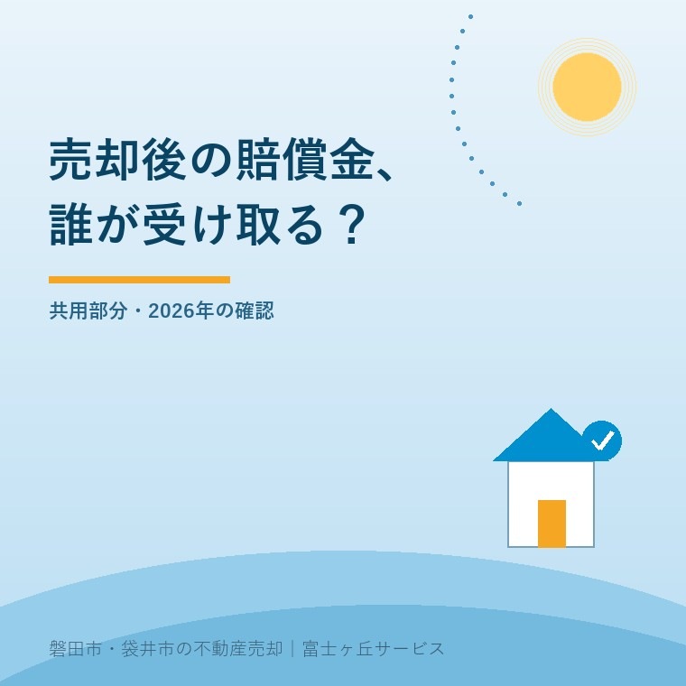

マンション売却後の賠償金、2026年の扱い
2026年10月2日｜カテゴリ：マンション・売却実務

この記事の要点
共用部分の不具合を請求中だけど売りたい。売却後の賠償金は私が受け取れる？
売却後の賠償金が売主へ直接入るとは限りません。標準管理規約は理事長が旧区分所有者も代理し、受領金を修繕等へ充てる形を示します。実際の規約と請求状況、売買契約を確認します。磐田市・袋井市・森町では、介護施設の運営から不動産事業を始めた富士ヶ丘サービスのような地域密着の会社に相談する選択肢があります。
大石浩之（磐田市／不動産業）です。マンションの共用部分の不具合について、管理組合の請求が続いている間に売却を考える場合があります。売買代金とは別に、将来受け取るかもしれない賠償金が気になります。しかし、売主へ直接入るお金とは限りません。
本記事は2026年10月2日確認の国土交通省のマンション標準管理規約から、請求中の売却で確認する窓口と書面を整理します。特定のマンションに不具合があると示す記事ではありません。専有部分の個別の損害と、共用部分等の請求も分けて考えます。
2026年4月施行と、管理規約の改正日を分ける
国土交通省のマンション標準管理規約は、2025年10月17日に改正されています。対応する改正区分所有法の施行日は2026年4月1日です。規約のひな型を改めた日と、法律が施行された日を同じ日として紹介しません。
標準管理規約は、各マンションが規約を作成・改正するときのひな型です。国が公表した文章が、そのまま全マンションの管理規約に入るわけではありません。売却前に見るのは、手元の管理規約と、その後の改正履歴です。
区分所有者は、マンションの部屋などの独立した部分を所有する人です。共用部分は、建物の所有者が共同で使い管理する部分を指します。廊下や外壁等を巡る請求の話を、自分の室内だけの修繕や、買主との売買代金の精算へ無条件に置き換えません。
私は、標準管理規約が旧所有者を含む請求窓口と、受領金の使い道を条文で示した点を評価します。売却を挟むと、誰へ連絡し、誰が請求を進めるかが見えにくくなります。管理組合と所有者が同じ資料から相談を始められる利点があります。
その上で、「改正されたから規約は確認不要」という説明には注文があります。管理組合が使う規約、請求の経過、費用を払った記録がなければ、売主が受け取れる額は分かりません。ひな型の紹介だけで、個別取引のお金を決めるのは無理があります。
理事長は旧区分所有者も代理する形
単棟型標準管理規約第24条の2は、保険金、敷地・共用部分等について生じた損害賠償金、不当利得による返還金の請求・受領について、理事長が区分所有者と旧区分所有者を代理する規定を置いています。旧区分所有者は、以前その区分所有権を持っていた人です。
同条は、理事会決議を経て、理事長が現在と旧の所有者のために訴訟の原告・被告となる等の法的措置を取れる形も示します。意外なのは、売った後の人も代理の対象に含めていることです。引渡しが終わったから、請求との関係も全部消えるとは読めません。
第4項には、区分所有権を譲渡した場合に、区分所有法第26条第2項の別段の意思表示を行わないというひな型の規定があります。これは旧所有者としての代理の扱いに関係する条項です。「売ったら自分で請求する」と単独で動く前に、適用条項と法的な意味を確認します。
私は、代理の扱いが分からないまま「請求権は全部放棄」「売主が全部受領」といった特約を入れる方法は勧めません。何の請求が、誰のために、どの手続きで進んでいるかを確かめてから相談します。権利の帰属や別段の意思表示の個別判断は、弁護士などの専門家に確認を。
管理組合へは、請求の相手、対象の不具合、交渉中か訴訟中か、担当窓口、所有者変更の連絡方法を尋ねます。回答を求める範囲は、取引で必要な情報として仲介会社と整理します。争いがあることだけで、売却できるともできないともここで断定しません。
受領金は売買代金ではなく、修繕等の資金
標準管理規約第24条の2第5項は、受領した保険金等を、原因となった敷地・共用部分等の瑕疵の修繕費用に充てる形を示します。瑕疵とは、不具合や欠陥のことです。所有者全員に均等に配るという規定ではありません。
修繕費に充てても残余がある場合、修繕を要しない場合、受領時にはすでに修繕済みの場合も示されています。その際には管理費用への充当、修繕積立金への組入れ、すでに修繕費を負担した人への償還ができるという整理です。償還は、負担した費用を戻すことを指します。
| 確認するお金 | 標準管理規約の考え方 | 売却前に集める資料 |
|---|---|---|
| 原因となる不具合の修繕 | 受領金を必要な修繕費へ充当 | 対象工事・修繕の実施状況 |
| 残余・修繕不要・修繕済みの場合 | 管理費用・修繕積立金・費用負担者への償還 | 規約・決議・支出記録 |
| 売買代金 | 売主と買主の契約による支払い | 売買契約・決済の精算書 |
私はこう考えます。まだ入っていない賠償金を、売主の手取りに足すな。窓口と使い道が先だ。請求額が書かれていても、その額で解決するとは限りません。受領時期も、管理組合が修繕等へ充てる額も未確定なら、家族の資金計画は売買代金と確認済みの支出で組みます。
私も、売主がすでに費用を出している場合に、どこまで契約で整理すべきかは迷います。費用を払った記録があっても、その場で全額戻ると言い切れません。規約と決議、請求の内容、売買の約束を専門家にそろえて見てもらう。この手間を飛ばして手取りだけを出すことはしません。
修繕工事の発注や管理方式の確認は、マンション修繕費と利益相反の説明を扱う記事にもつながります。ただし、管理業者への説明確認と、売却後の賠償金の請求・受領は同じ論点ではありません。担当窓口と資料を分けます。
磐田・袋井で売るなら、契約前に窓口をつなぐ
磐田市・袋井市のマンションを売る場合も、全国の標準管理規約だけで契約条件を確定しません。管理組合の理事長や指定された窓口、管理会社、仲介会社へ、今回の請求についてどの資料が出せるか確認します。地域独自の一律分配があるという話ではありません。
私なら、管理規約、改正履歴、関連する総会・理事会の資料、請求経過の説明、修繕費の負担記録を一つのファイルにします。未確定の項目には「未確定」と書きます。売主の記憶だけで不具合が直った、請求が終わったと説明しないためです。
仲介会社とは、買主へ説明する事実と、契約で取り決める内容を区別します。対象の不具合、修繕済みか、追加工事の見通し、請求が続いているかを確認します。将来の入金や償還の扱いは、法的な確認が済んでから特約等の必要性を検討します。
共用部分の不具合があるから、売主と買主の契約上の責任がすべて消えるわけでもありません。契約不適合責任を整理した記事を参考に、判明している状態と買主への説明をそろえます。責任の範囲や免責条項の効力は、弁護士などの専門家に確認を。
引渡し後に売主への通知が必要となる可能性も考え、住所変更と連絡先の届け出方法を聞きます。買主の連絡先を売主が勝手に外部へ渡すのではなく、管理組合の手続きに合わせて所有者変更を伝えます。請求の窓口と売買の窓口が途切れないようにする準備です。
今日集める資料と、決めないまま残す項目
請求中のマンション売却で今日できることは、管理規約の該当条項と請求経過を集め、受領窓口と受領金の予定用途を尋ねることです。資料を集めた後でも、賠償額、支払時期、売主への償還は未確定のまま残る場合があります。その空欄を推測で埋めません。
- 実際の規約と改正履歴を確認する。
- 請求の対象・窓口・進行状況を整理する。
- 修繕の状況、支出記録、受領金の用途を聞く。
- 買主への説明と契約条件を専門家に照合する。
決済資料では、決済当日の金銭の流れを扱った記事のように、入金と支払いを別に並べます。私は、未確定の賠償金を決済日の確定入金へ加えず、請求に関する引継ぎ事項として残すよう案内します。
富士ヶ丘サービスは磐田・袋井に根差し、介護と不動産を一体で相談する窓口です。家族が困らない売却のため、売る前に管理資料と相談先を整えます。売却の時期は、その材料を見てから考えられます。請求権や売買契約の個別判断は専門家に確認を。
よくある質問
請求や準備で迷う点を整理します。
- 売却すると、請求中の損害賠償金は必ず買主のものになりますか？
- 必ず買主のものになるとも、売主が直接受け取るとも断定できません。標準管理規約は、理事長が現在の区分所有者と旧区分所有者を代理して請求・受領する形を示します。実際の規約、請求の根拠、修繕費の負担、売買契約を照合して扱いを確認します。権利の帰属や特約の効力は、弁護士などの専門家に確認を。
- 管理組合が受け取った賠償金は、所有者へ分配されますか？
- 標準管理規約では、原因となった敷地・共用部分等の瑕疵の修繕費用に充てるのが基本です。残余がある場合、修繕不要の場合、受領時に修繕済みの場合には、管理費用への充当、修繕積立金への組入れ、費用負担者への償還が示されています。全員への分配を当然とはせず、実際の規約と決議、支出記録を管理組合へ確認します。
- 2026年4月から、全マンションの規約が自動で変わりましたか？
- 標準管理規約は各マンションの規約作成・改正のひな型であり、その文章が自動で各規約に入るわけではありません。対応する改正区分所有法は2026年4月1日施行ですが、手元の規約の改正履歴と適用条項を別に確かめます。旧区分所有者の代理や別段の意思表示の扱いを自己判断せず、管理組合と弁護士などの専門家に確認を。

この記事を書いた人：大石浩之（磐田市／不動産業・宅地建物取引士）
富士ヶ丘サービス株式会社。介護施設の運営から不動産事業を始め、磐田市・袋井市・森町で、介護と相続、実家の売却を一体で相談できる窓口を設けています。家族が困らない売却のため、資料と現地の条件を一件ずつ整理します。著者プロフィール
本記事は2026年10月2日時点の公開情報と筆者の意見です。制度・数値・手続き・契約条件は変更されることがあります。税務・登記・相続・重要事項説明・契約などの個別判断は、税理士・司法書士・弁護士などの専門家に確認を。